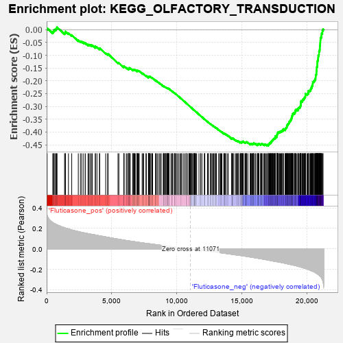
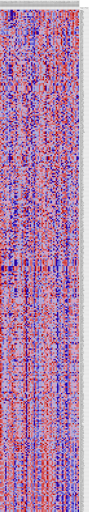
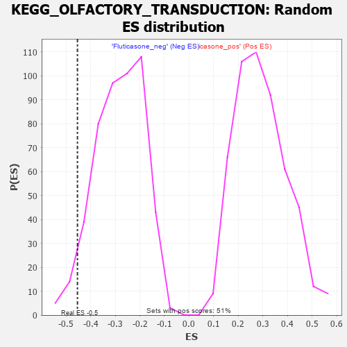

| | | Dataset | GSEA_expr_Flu.GSEA_timepoint.cls#Fluticasone |
| Phenotype | GSEA_timepoint.cls#Fluticasone |
| Upregulated in class | Fluticasone_neg |
| GeneSet | KEGG_OLFACTORY_TRANSDUCTION |
| Enrichment Score (ES) | -0.45342216 |
| Normalized Enrichment Score (NES) | -1.6079216 |
| Nominal p-value | 0.040816326 |
| FDR q-value | 1.0 |
| FWER p-Value | 0.506 |
Table: GSEA Results Summary

Fig 1: Enrichment plot: KEGG_OLFACTORY_TRANSDUCTION
Profile of the Running ES Score & Positions of GeneSet Members on the Rank Ordered List
| PROBE | DESCRIPTION
(from dataset) | GENE SYMBOL | GENE_TITLE | RANK IN GENE LIST | RANK METRIC SCORE | RUNNING ES | CORE ENRICHMENT | | 1 | OR9A2 | NA | | | 37 | 0.328 | 0.0058 | No |
| 2 | CAMK2B | NA | | | 472 | 0.257 | -0.0089 | No |
| 3 | OR2W1 | NA | | | 527 | 0.252 | -0.0057 | No |
| 4 | OR2B3 | NA | | | 564 | 0.250 | -0.0016 | No |
| 5 | OR5V1 | NA | | | 637 | 0.246 | 0.0007 | No |
| 6 | OR2AE1 | NA | | | 721 | 0.239 | 0.0023 | No |
| 7 | OR12D3 | NA | | | 769 | 0.237 | 0.0055 | No |
| 8 | PDE1C | NA | | | 799 | 0.235 | 0.0096 | No |
| 9 | GRK3 | NA | | | 1379 | 0.207 | -0.0133 | No |
| 10 | ARRB2 | NA | | | 1433 | 0.204 | -0.0111 | No |
| 11 | OR11A1 | NA | | | 1450 | 0.203 | -0.0071 | No |
| 12 | GUCY2D | NA | | | 1677 | 0.195 | -0.0134 | No |
| 13 | OR2B2 | NA | | | 1929 | 0.185 | -0.0211 | No |
| 14 | OR4M1 | NA | | | 2434 | 0.169 | -0.0413 | No |
| 15 | OR6T1 | NA | | | 2599 | 0.164 | -0.0453 | No |
| 16 | OR1D4 | NA | | | 2706 | 0.161 | -0.0466 | No |
| 17 | OR10S1 | NA | | | 2851 | 0.157 | -0.0499 | No |
| 18 | OR6X1 | NA | | | 2982 | 0.154 | -0.0525 | No |
| 19 | OR6M1 | NA | | | 3182 | 0.149 | -0.0586 | No |
| 20 | OR1A1 | NA | | | 3254 | 0.147 | -0.0585 | No |
| 21 | ADCY3 | NA | | | 3346 | 0.145 | -0.0595 | No |
| 22 | OR2Y1 | NA | | | 3444 | 0.143 | -0.0609 | No |
| 23 | OR1D2 | NA | | | 3519 | 0.141 | -0.0611 | No |
| 24 | OR1D5 | NA | | | 3742 | 0.136 | -0.0686 | No |
| 25 | CALM2 | NA | | | 3747 | 0.136 | -0.0656 | No |
| 26 | OR3A3 | NA | | | 3870 | 0.132 | -0.0684 | No |
| 27 | OR1A2 | NA | | | 4062 | 0.128 | -0.0745 | No |
| 28 | OR1F1 | NA | | | 4080 | 0.127 | -0.0724 | No |
| 29 | OR2B6 | NA | | | 4541 | 0.117 | -0.0917 | No |
| 30 | OR4D1 | NA | | | 4694 | 0.113 | -0.0963 | No |
| 31 | OR2S2 | NA | | | 4727 | 0.113 | -0.0952 | No |
| 32 | OR2T1 | NA | | | 5488 | 0.096 | -0.1293 | No |
| 33 | OR4D2 | NA | | | 5554 | 0.094 | -0.1302 | No |
| 34 | OR6B2 | NA | | | 5933 | 0.086 | -0.1463 | No |
| 35 | OR5H6 | NA | | | 5946 | 0.086 | -0.1449 | No |
| 36 | OR2V2 | NA | | | 5955 | 0.085 | -0.1433 | No |
| 37 | OR2T2 | NA | | | 6126 | 0.082 | -0.1495 | No |
| 38 | OR13J1 | NA | | | 6205 | 0.080 | -0.1514 | No |
| 39 | OR6B3 | NA | | | 6306 | 0.079 | -0.1544 | No |
| 40 | OR2J2 | NA | | | 6317 | 0.078 | -0.1530 | No |
| 41 | OR2L8 | NA | | | 6344 | 0.078 | -0.1524 | No |
| 42 | OR2M7 | NA | | | 6350 | 0.078 | -0.1509 | No |
| 43 | OR4N5 | NA | | | 6359 | 0.078 | -0.1495 | No |
| 44 | OR4K2 | NA | | | 6440 | 0.076 | -0.1515 | No |
| 45 | OR1J2 | NA | | | 6620 | 0.073 | -0.1584 | No |
| 46 | OR4K5 | NA | | | 6635 | 0.073 | -0.1574 | No |
| 47 | OR11G2 | NA | | | 6656 | 0.072 | -0.1566 | No |
| 48 | CAMK2A | NA | | | 6718 | 0.071 | -0.1579 | No |
| 49 | OR4E2 | NA | | | 6731 | 0.071 | -0.1568 | No |
| 50 | OR2T3 | NA | | | 6775 | 0.070 | -0.1573 | No |
| 51 | OR4K17 | NA | | | 6818 | 0.069 | -0.1577 | No |
| 52 | OR2J3 | NA | | | 6952 | 0.066 | -0.1625 | No |
| 53 | OR2H2 | NA | | | 6957 | 0.066 | -0.1612 | No |
| 54 | OR5AC2 | NA | | | 6967 | 0.066 | -0.1601 | No |
| 55 | OR8D2 | NA | | | 6977 | 0.066 | -0.1590 | No |
| 56 | OR4F6 | NA | | | 7050 | 0.065 | -0.1609 | No |
| 57 | OR2A4 | NA | | | 7089 | 0.064 | -0.1612 | No |
| 58 | OR2A7 | NA | | | 7116 | 0.063 | -0.1610 | No |
| 59 | OR2AK2 | NA | | | 7345 | 0.059 | -0.1705 | No |
| 60 | OR2T5 | NA | | | 7397 | 0.059 | -0.1716 | No |
| 61 | OR2T4 | NA | | | 7466 | 0.058 | -0.1735 | No |
| 62 | OR2T6 | NA | | | 7637 | 0.054 | -0.1804 | No |
| 63 | OR2A25 | NA | | | 7668 | 0.054 | -0.1806 | No |
| 64 | OR13F1 | NA | | | 7825 | 0.051 | -0.1868 | No |
| 65 | OR10H4 | NA | | | 7839 | 0.051 | -0.1863 | No |
| 66 | OR11H6 | NA | | | 7848 | 0.051 | -0.1855 | No |
| 67 | OR4F16 | NA | | | 7865 | 0.051 | -0.1851 | No |
| 68 | OR4N2 | NA | | | 7874 | 0.050 | -0.1843 | No |
| 69 | OR10Q1 | NA | | | 7875 | 0.050 | -0.1831 | No |
| 70 | OR6Y1 | NA | | | 7914 | 0.050 | -0.1838 | No |
| 71 | OR2T29 | NA | | | 7916 | 0.050 | -0.1827 | No |
| 72 | OR11H4 | NA | | | 7979 | 0.049 | -0.1845 | No |
| 73 | OR2M2 | NA | | | 8079 | 0.047 | -0.1881 | No |
| 74 | OR10H3 | NA | | | 8102 | 0.046 | -0.1881 | No |
| 75 | OR2L13 | NA | | | 8153 | 0.046 | -0.1894 | No |
| 76 | OR14J1 | NA | | | 8380 | 0.042 | -0.1993 | No |
| 77 | OR10C1 | NA | | | 8385 | 0.042 | -0.1985 | No |
| 78 | OR13D1 | NA | | | 8436 | 0.041 | -0.1999 | No |
| 79 | OR8B8 | NA | | | 8534 | 0.040 | -0.2036 | No |
| 80 | OR2T34 | NA | | | 8647 | 0.038 | -0.2081 | No |
| 81 | OR13C8 | NA | | | 8725 | 0.036 | -0.2109 | No |
| 82 | OR8B4 | NA | | | 8815 | 0.035 | -0.2144 | No |
| 83 | OR6K3 | NA | | | 8967 | 0.032 | -0.2209 | No |
| 84 | OR2M3 | NA | | | 9009 | 0.032 | -0.2221 | No |
| 85 | OR8B12 | NA | | | 9012 | 0.032 | -0.2214 | No |
| 86 | OR11H1 | NA | | | 9054 | 0.031 | -0.2227 | No |
| 87 | OR9I1 | NA | | | 9072 | 0.031 | -0.2228 | No |
| 88 | CALM3 | NA | | | 9153 | 0.029 | -0.2259 | No |
| 89 | OR13H1 | NA | | | 9155 | 0.029 | -0.2253 | No |
| 90 | CALML6 | NA | | | 9181 | 0.029 | -0.2258 | No |
| 91 | OR2W3 | NA | | | 9252 | 0.028 | -0.2285 | No |
| 92 | GUCA1C | NA | | | 9263 | 0.028 | -0.2284 | No |
| 93 | OR10H5 | NA | | | 9286 | 0.027 | -0.2288 | No |
| 94 | OR14C36 | NA | | | 9293 | 0.027 | -0.2284 | No |
| 95 | OR2M5 | NA | | | 9328 | 0.026 | -0.2294 | No |
| 96 | OR1L6 | NA | | | 9381 | 0.026 | -0.2313 | No |
| 97 | OR2G6 | NA | | | 9394 | 0.026 | -0.2313 | No |
| 98 | OR4F4 | NA | | | 9398 | 0.025 | -0.2309 | No |
| 99 | OR2T8 | NA | | | 9402 | 0.025 | -0.2304 | No |
| 100 | OR2M4 | NA | | | 9556 | 0.023 | -0.2372 | No |
| 101 | OR10A7 | NA | | | 9651 | 0.021 | -0.2412 | No |
| 102 | OR4M2 | NA | | | 9654 | 0.021 | -0.2408 | No |
| 103 | OR2G3 | NA | | | 9703 | 0.020 | -0.2426 | No |
| 104 | OR4F3 | NA | | | 9822 | 0.018 | -0.2478 | No |
| 105 | OR4K13 | NA | | | 9846 | 0.018 | -0.2485 | No |
| 106 | OR12D2 | NA | | | 9862 | 0.018 | -0.2488 | No |
| 107 | OR2H1 | NA | | | 9933 | 0.017 | -0.2518 | No |
| 108 | OR5C1 | NA | | | 9957 | 0.016 | -0.2525 | No |
| 109 | OR5K2 | NA | | | 10046 | 0.015 | -0.2564 | No |
| 110 | OR2L2 | NA | | | 10151 | 0.014 | -0.2610 | No |
| 111 | OR6S1 | NA | | | 10253 | 0.012 | -0.2656 | No |
| 112 | OR1I1 | NA | | | 10332 | 0.011 | -0.2690 | No |
| 113 | OR4L1 | NA | | | 10373 | 0.010 | -0.2707 | No |
| 114 | OR4K15 | NA | | | 10492 | 0.008 | -0.2762 | No |
| 115 | OR4K1 | NA | | | 10596 | 0.007 | -0.2809 | No |
| 116 | OR1M1 | NA | | | 10722 | 0.005 | -0.2868 | No |
| 117 | OR5H2 | NA | | | 10731 | 0.005 | -0.2870 | No |
| 118 | OR8D1 | NA | | | 10732 | 0.005 | -0.2869 | No |
| 119 | OR10H2 | NA | | | 10847 | 0.003 | -0.2923 | No |
| 120 | CNGB1 | NA | | | 10948 | 0.002 | -0.2970 | No |
| 121 | OR2C1 | NA | | | 10961 | 0.002 | -0.2976 | No |
| 122 | OR6C74 | NA | | | 10990 | 0.001 | -0.2989 | No |
| 123 | OR1Q1 | NA | | | 11033 | 0.001 | -0.3009 | No |
| 124 | OR4F5 | NA | | | 11037 | 0.001 | -0.3010 | No |
| 125 | OR2AT4 | NA | | | 11114 | -0.001 | -0.3046 | No |
| 126 | OR1J4 | NA | | | 11116 | -0.001 | -0.3047 | No |
| 127 | OR4F15 | NA | | | 11131 | -0.001 | -0.3053 | No |
| 128 | OR1K1 | NA | | | 11204 | -0.002 | -0.3087 | No |
| 129 | OR2G2 | NA | | | 11300 | -0.004 | -0.3132 | No |
| 130 | OR1G1 | NA | | | 11307 | -0.004 | -0.3134 | No |
| 131 | OR6C4 | NA | | | 11353 | -0.004 | -0.3154 | No |
| 132 | OR1L3 | NA | | | 11380 | -0.005 | -0.3165 | No |
| 133 | OR6C1 | NA | | | 11388 | -0.005 | -0.3168 | No |
| 134 | OR4K14 | NA | | | 11401 | -0.005 | -0.3172 | No |
| 135 | OR2L3 | NA | | | 11420 | -0.005 | -0.3180 | No |
| 136 | OR10G7 | NA | | | 11487 | -0.006 | -0.3210 | No |
| 137 | OR7D2 | NA | | | 11538 | -0.007 | -0.3232 | No |
| 138 | OR6C68 | NA | | | 11716 | -0.010 | -0.3314 | No |
| 139 | OR7C2 | NA | | | 11842 | -0.012 | -0.3371 | No |
| 140 | OR1L4 | NA | | | 11853 | -0.012 | -0.3373 | No |
| 141 | OR8H1 | NA | | | 11945 | -0.014 | -0.3413 | No |
| 142 | OR2Z1 | NA | | | 12125 | -0.016 | -0.3495 | No |
| 143 | OR5B12 | NA | | | 12161 | -0.017 | -0.3508 | No |
| 144 | OR9G4 | NA | | | 12165 | -0.017 | -0.3505 | No |
| 145 | GNAL | NA | | | 12368 | -0.021 | -0.3597 | No |
| 146 | PRKX | NA | | | 12430 | -0.022 | -0.3621 | No |
| 147 | OR9K2 | NA | | | 12433 | -0.022 | -0.3617 | No |
| 148 | OR6C76 | NA | | | 12584 | -0.024 | -0.3683 | No |
| 149 | OR1S2 | NA | | | 12594 | -0.024 | -0.3682 | No |
| 150 | OR6C70 | NA | | | 12662 | -0.025 | -0.3708 | No |
| 151 | OR1N2 | NA | | | 12724 | -0.026 | -0.3731 | No |
| 152 | OR10X1 | NA | | | 12810 | -0.028 | -0.3765 | No |
| 153 | CNGA3 | NA | | | 12850 | -0.029 | -0.3777 | No |
| 154 | OR5M10 | NA | | | 12930 | -0.030 | -0.3808 | No |
| 155 | OR4C11 | NA | | | 12981 | -0.031 | -0.3824 | No |
| 156 | OR10P1 | NA | | | 13031 | -0.032 | -0.3841 | No |
| 157 | PRKACG | NA | | | 13059 | -0.032 | -0.3846 | No |
| 158 | OR5I1 | NA | | | 13227 | -0.035 | -0.3918 | No |
| 159 | GUCA1A | NA | | | 13313 | -0.036 | -0.3950 | No |
| 160 | OR6C2 | NA | | | 13364 | -0.037 | -0.3965 | No |
| 161 | OR1L1 | NA | | | 13427 | -0.038 | -0.3986 | No |
| 162 | OR5A2 | NA | | | 13479 | -0.039 | -0.4001 | No |
| 163 | OR10T2 | NA | | | 13623 | -0.042 | -0.4060 | No |
| 164 | OR5K1 | NA | | | 13658 | -0.042 | -0.4066 | No |
| 165 | OR10K2 | NA | | | 13685 | -0.043 | -0.4069 | No |
| 166 | OR6K2 | NA | | | 13700 | -0.043 | -0.4065 | No |
| 167 | OR7A17 | NA | | | 13773 | -0.044 | -0.4090 | No |
| 168 | CALML5 | NA | | | 13796 | -0.045 | -0.4090 | No |
| 169 | OR5AU1 | NA | | | 13924 | -0.047 | -0.4139 | No |
| 170 | GUCA1B | NA | | | 13965 | -0.048 | -0.4147 | No |
| 171 | OR5M1 | NA | | | 14241 | -0.052 | -0.4267 | No |
| 172 | OR8A1 | NA | | | 14248 | -0.053 | -0.4257 | No |
| 173 | OR6C6 | NA | | | 14251 | -0.053 | -0.4246 | No |
| 174 | OR5M3 | NA | | | 14252 | -0.053 | -0.4234 | No |
| 175 | OR8D4 | NA | | | 14347 | -0.055 | -0.4266 | No |
| 176 | OR7A5 | NA | | | 14350 | -0.055 | -0.4254 | No |
| 177 | OR6C65 | NA | | | 14502 | -0.058 | -0.4313 | No |
| 178 | OR8G2P | NA | | | 14577 | -0.059 | -0.4335 | No |
| 179 | OR4P4 | NA | | | 14635 | -0.060 | -0.4348 | No |
| 180 | OR7G2 | NA | | | 14672 | -0.060 | -0.4351 | No |
| 181 | OR10J5 | NA | | | 14730 | -0.061 | -0.4364 | No |
| 182 | OR6C75 | NA | | | 14746 | -0.062 | -0.4357 | No |
| 183 | OR10G9 | NA | | | 14873 | -0.064 | -0.4403 | No |
| 184 | OR6B1 | NA | | | 14894 | -0.064 | -0.4397 | No |
| 185 | OR6C3 | NA | | | 14917 | -0.065 | -0.4393 | No |
| 186 | CAMK2D | NA | | | 14984 | -0.066 | -0.4409 | No |
| 187 | OR10G2 | NA | | | 14990 | -0.066 | -0.4396 | No |
| 188 | OR3A1 | NA | | | 15006 | -0.066 | -0.4388 | No |
| 189 | OR9A4 | NA | | | 15017 | -0.066 | -0.4377 | No |
| 190 | OR10G3 | NA | | | 15049 | -0.067 | -0.4377 | No |
| 191 | OR1E1 | NA | | | 15092 | -0.067 | -0.4381 | No |
| 192 | OR5R1 | NA | | | 15094 | -0.068 | -0.4366 | No |
| 193 | OR8K5 | NA | | | 15128 | -0.068 | -0.4366 | No |
| 194 | OR5AP2 | NA | | | 15252 | -0.071 | -0.4408 | No |
| 195 | OR8J3 | NA | | | 15283 | -0.071 | -0.4406 | No |
| 196 | OR5B3 | NA | | | 15301 | -0.072 | -0.4398 | No |
| 197 | OR6V1 | NA | | | 15344 | -0.072 | -0.4401 | No |
| 198 | OR2A2 | NA | | | 15368 | -0.073 | -0.4395 | No |
| 199 | OR2A5 | NA | | | 15390 | -0.073 | -0.4388 | No |
| 200 | OR2A14 | NA | | | 15480 | -0.075 | -0.4413 | No |
| 201 | OR6N1 | NA | | | 15655 | -0.079 | -0.4478 | No |
| 202 | OR5L2 | NA | | | 15687 | -0.079 | -0.4474 | No |
| 203 | OR2A12 | NA | | | 15688 | -0.079 | -0.4456 | No |
| 204 | OR5M8 | NA | | | 15740 | -0.080 | -0.4462 | No |
| 205 | OR4C16 | NA | | | 15813 | -0.082 | -0.4477 | No |
| 206 | OR7A10 | NA | | | 15824 | -0.082 | -0.4463 | No |
| 207 | OR5M9 | NA | | | 15864 | -0.083 | -0.4462 | No |
| 208 | OR1E2 | NA | | | 15906 | -0.084 | -0.4462 | No |
| 209 | OR7D4 | NA | | | 15910 | -0.084 | -0.4444 | No |
| 210 | OR2F2 | NA | | | 15929 | -0.084 | -0.4433 | No |
| 211 | OR10A2 | NA | | | 16029 | -0.087 | -0.4460 | No |
| 212 | OR7G3 | NA | | | 16087 | -0.088 | -0.4467 | No |
| 213 | OR4D6 | NA | | | 16202 | -0.090 | -0.4501 | No |
| 214 | OR5B21 | NA | | | 16242 | -0.091 | -0.4498 | No |
| 215 | OR10AG1 | NA | | | 16259 | -0.091 | -0.4485 | No |
| 216 | OR5F1 | NA | | | 16261 | -0.091 | -0.4464 | No |
| 217 | OR2D3 | NA | | | 16289 | -0.092 | -0.4456 | No |
| 218 | OR10V1 | NA | | | 16325 | -0.093 | -0.4451 | No |
| 219 | PRKACB | NA | | | 16451 | -0.095 | -0.4488 | No |
| 220 | OR4C12 | NA | | | 16479 | -0.096 | -0.4479 | No |
| 221 | OR52K1 | NA | | | 16505 | -0.097 | -0.4469 | No |
| 222 | OR4A16 | NA | | | 16553 | -0.098 | -0.4468 | No |
| 223 | OR5D13 | NA | | | 16575 | -0.098 | -0.4456 | No |
| 224 | OR5AS1 | NA | | | 16696 | -0.101 | -0.4490 | No |
| 225 | CNGA4 | NA | | | 16769 | -0.103 | -0.4500 | No |
| 226 | OR1L8 | NA | | | 16775 | -0.103 | -0.4479 | No |
| 227 | OR10AD1 | NA | | | 16841 | -0.104 | -0.4486 | No |
| 228 | OR4D9 | NA | | | 16931 | -0.106 | -0.4504 | No |
| 229 | OR52M1 | NA | | | 16967 | -0.107 | -0.4496 | No |
| 230 | OR5A1 | NA | | | 17049 | -0.109 | -0.4509 | Yes |
| 231 | OR7G1 | NA | | | 17072 | -0.110 | -0.4494 | Yes |
| 232 | OR4D10 | NA | | | 17092 | -0.110 | -0.4478 | Yes |
| 233 | OR2A1 | NA | | | 17104 | -0.110 | -0.4457 | Yes |
| 234 | CALM1 | NA | | | 17124 | -0.111 | -0.4441 | Yes |
| 235 | OR8G5 | NA | | | 17175 | -0.112 | -0.4438 | Yes |
| 236 | OR5AR1 | NA | | | 17221 | -0.114 | -0.4434 | Yes |
| 237 | OR5M11 | NA | | | 17223 | -0.114 | -0.4408 | Yes |
| 238 | OR10G4 | NA | | | 17241 | -0.114 | -0.4389 | Yes |
| 239 | OR8H2 | NA | | | 17287 | -0.115 | -0.4384 | Yes |
| 240 | OR52K2 | NA | | | 17304 | -0.115 | -0.4365 | Yes |
| 241 | OR1J1 | NA | | | 17313 | -0.116 | -0.4342 | Yes |
| 242 | OR4D11 | NA | | | 17354 | -0.116 | -0.4334 | Yes |
| 243 | OR1N1 | NA | | | 17383 | -0.117 | -0.4320 | Yes |
| 244 | OR2A42 | NA | | | 17406 | -0.118 | -0.4303 | Yes |
| 245 | OR4C6 | NA | | | 17418 | -0.118 | -0.4281 | Yes |
| 246 | OR5D14 | NA | | | 17464 | -0.119 | -0.4275 | Yes |
| 247 | OR4C45 | NA | | | 17484 | -0.119 | -0.4257 | Yes |
| 248 | OR5T1 | NA | | | 17526 | -0.121 | -0.4248 | Yes |
| 249 | OR4D5 | NA | | | 17570 | -0.122 | -0.4241 | Yes |
| 250 | OR5AN1 | NA | | | 17574 | -0.122 | -0.4214 | Yes |
| 251 | OR56B4 | NA | | | 17579 | -0.122 | -0.4187 | Yes |
| 252 | OR6N2 | NA | | | 17583 | -0.122 | -0.4161 | Yes |
| 253 | OR56B1 | NA | | | 17698 | -0.125 | -0.4186 | Yes |
| 254 | OR51B6 | NA | | | 17702 | -0.125 | -0.4159 | Yes |
| 255 | CLCA4 | NA | | | 17705 | -0.125 | -0.4131 | Yes |
| 256 | OR5B17 | NA | | | 17718 | -0.125 | -0.4107 | Yes |
| 257 | OR4C46 | NA | | | 17739 | -0.126 | -0.4088 | Yes |
| 258 | OR4C13 | NA | | | 17748 | -0.126 | -0.4062 | Yes |
| 259 | OR6Q1 | NA | | | 17750 | -0.126 | -0.4034 | Yes |
| 260 | OR8S1 | NA | | | 17798 | -0.127 | -0.4027 | Yes |
| 261 | OR4S2 | NA | | | 17804 | -0.127 | -0.4000 | Yes |
| 262 | OR4A15 | NA | | | 17887 | -0.129 | -0.4009 | Yes |
| 263 | OR52I1 | NA | | | 17908 | -0.129 | -0.3989 | Yes |
| 264 | OR9Q1 | NA | | | 17970 | -0.131 | -0.3987 | Yes |
| 265 | OR8J1 | NA | | | 18015 | -0.132 | -0.3978 | Yes |
| 266 | OR1B1 | NA | | | 18068 | -0.133 | -0.3972 | Yes |
| 267 | OR4B1 | NA | | | 18076 | -0.133 | -0.3944 | Yes |
| 268 | OR10J3 | NA | | | 18155 | -0.136 | -0.3950 | Yes |
| 269 | OR5T2 | NA | | | 18170 | -0.136 | -0.3925 | Yes |
| 270 | CLCA1 | NA | | | 18175 | -0.136 | -0.3895 | Yes |
| 271 | OR52I2 | NA | | | 18213 | -0.137 | -0.3881 | Yes |
| 272 | OR51M1 | NA | | | 18338 | -0.140 | -0.3908 | Yes |
| 273 | OR10A6 | NA | | | 18356 | -0.141 | -0.3883 | Yes |
| 274 | OR51D1 | NA | | | 18368 | -0.141 | -0.3856 | Yes |
| 275 | OR52D1 | NA | | | 18399 | -0.142 | -0.3837 | Yes |
| 276 | OR51T1 | NA | | | 18440 | -0.143 | -0.3823 | Yes |
| 277 | OR4C15 | NA | | | 18467 | -0.144 | -0.3802 | Yes |
| 278 | CLCA2 | NA | | | 18472 | -0.144 | -0.3771 | Yes |
| 279 | OR51F2 | NA | | | 18476 | -0.144 | -0.3739 | Yes |
| 280 | OR4A5 | NA | | | 18523 | -0.146 | -0.3727 | Yes |
| 281 | OR9G1 | NA | | | 18552 | -0.146 | -0.3706 | Yes |
| 282 | OR5L1 | NA | | | 18559 | -0.147 | -0.3675 | Yes |
| 283 | OR8G1 | NA | | | 18609 | -0.148 | -0.3664 | Yes |
| 284 | OR5P2 | NA | | | 18636 | -0.148 | -0.3642 | Yes |
| 285 | OR51A7 | NA | | | 18655 | -0.149 | -0.3616 | Yes |
| 286 | OR4A47 | NA | | | 18668 | -0.149 | -0.3587 | Yes |
| 287 | OR8U8 | NA | | | 18716 | -0.151 | -0.3575 | Yes |
| 288 | OR5D16 | NA | | | 18744 | -0.152 | -0.3552 | Yes |
| 289 | OR52E2 | NA | | | 18774 | -0.153 | -0.3531 | Yes |
| 290 | OR8U1 | NA | | | 18789 | -0.153 | -0.3502 | Yes |
| 291 | OR5J2 | NA | | | 18823 | -0.154 | -0.3482 | Yes |
| 292 | OR8K1 | NA | | | 18832 | -0.154 | -0.3450 | Yes |
| 293 | OR2F1 | NA | | | 18872 | -0.155 | -0.3433 | Yes |
| 294 | PRKACA | NA | | | 18874 | -0.156 | -0.3397 | Yes |
| 295 | OR52W1 | NA | | | 18881 | -0.156 | -0.3364 | Yes |
| 296 | OR52N2 | NA | | | 18910 | -0.157 | -0.3341 | Yes |
| 297 | OR10A3 | NA | | | 18914 | -0.157 | -0.3306 | Yes |
| 298 | OR10G8 | NA | | | 18935 | -0.157 | -0.3279 | Yes |
| 299 | OR4N4 | NA | | | 18981 | -0.158 | -0.3264 | Yes |
| 300 | OR8K3 | NA | | | 19062 | -0.161 | -0.3265 | Yes |
| 301 | OR13C4 | NA | | | 19078 | -0.161 | -0.3235 | Yes |
| 302 | OR9Q2 | NA | | | 19116 | -0.162 | -0.3215 | Yes |
| 303 | OR5D18 | NA | | | 19130 | -0.163 | -0.3183 | Yes |
| 304 | OR5AK2 | NA | | | 19131 | -0.163 | -0.3145 | Yes |
| 305 | OR2AG1 | NA | | | 19165 | -0.164 | -0.3123 | Yes |
| 306 | OR1S1 | NA | | | 19249 | -0.166 | -0.3124 | Yes |
| 307 | OR5P3 | NA | | | 19327 | -0.169 | -0.3122 | Yes |
| 308 | OR51E1 | NA | | | 19341 | -0.170 | -0.3089 | Yes |
| 309 | OR5T3 | NA | | | 19360 | -0.170 | -0.3058 | Yes |
| 310 | OR51I1 | NA | | | 19409 | -0.172 | -0.3041 | Yes |
| 311 | OR10A5 | NA | | | 19476 | -0.175 | -0.3032 | Yes |
| 312 | OR4S1 | NA | | | 19501 | -0.176 | -0.3003 | Yes |
| 313 | OR11L1 | NA | | | 19522 | -0.176 | -0.2971 | Yes |
| 314 | OR52E4 | NA | | | 19536 | -0.177 | -0.2937 | Yes |
| 315 | OR2D2 | NA | | | 19552 | -0.177 | -0.2903 | Yes |
| 316 | OR51I2 | NA | | | 19556 | -0.177 | -0.2863 | Yes |
| 317 | PDC | NA | | | 19560 | -0.177 | -0.2823 | Yes |
| 318 | OR8I2 | NA | | | 19567 | -0.178 | -0.2785 | Yes |
| 319 | CAMK2G | NA | | | 19665 | -0.182 | -0.2789 | Yes |
| 320 | OR51Q1 | NA | | | 19679 | -0.183 | -0.2753 | Yes |
| 321 | OR8H3 | NA | | | 19704 | -0.184 | -0.2722 | Yes |
| 322 | OR10A4 | NA | | | 19768 | -0.186 | -0.2709 | Yes |
| 323 | OR51A4 | NA | | | 19806 | -0.187 | -0.2683 | Yes |
| 324 | OR52B6 | NA | | | 19829 | -0.188 | -0.2650 | Yes |
| 325 | OR4C3 | NA | | | 19875 | -0.190 | -0.2627 | Yes |
| 326 | OR52N4 | NA | | | 19896 | -0.190 | -0.2593 | Yes |
| 327 | OR56A3 | NA | | | 19898 | -0.191 | -0.2549 | Yes |
| 328 | OR13C5 | NA | | | 19900 | -0.191 | -0.2505 | Yes |
| 329 | PRKG2 | NA | | | 20021 | -0.195 | -0.2517 | Yes |
| 330 | OR52N5 | NA | | | 20068 | -0.198 | -0.2493 | Yes |
| 331 | OR4X2 | NA | | | 20123 | -0.200 | -0.2473 | Yes |
| 332 | OR13C3 | NA | | | 20132 | -0.201 | -0.2430 | Yes |
| 333 | OR6A2 | NA | | | 20138 | -0.201 | -0.2386 | Yes |
| 334 | OR13C2 | NA | | | 20222 | -0.206 | -0.2378 | Yes |
| 335 | OR14I1 | NA | | | 20281 | -0.209 | -0.2357 | Yes |
| 336 | OR2K2 | NA | | | 20311 | -0.210 | -0.2322 | Yes |
| 337 | OR6K6 | NA | | | 20334 | -0.211 | -0.2284 | Yes |
| 338 | OR13C9 | NA | | | 20375 | -0.214 | -0.2253 | Yes |
| 339 | OR52J3 | NA | | | 20393 | -0.215 | -0.2211 | Yes |
| 340 | OR52A5 | NA | | | 20427 | -0.217 | -0.2177 | Yes |
| 341 | OR13A1 | NA | | | 20459 | -0.218 | -0.2141 | Yes |
| 342 | OR51G1 | NA | | | 20468 | -0.218 | -0.2094 | Yes |
| 343 | OR2AG2 | NA | | | 20474 | -0.219 | -0.2046 | Yes |
| 344 | OR4X1 | NA | | | 20531 | -0.222 | -0.2021 | Yes |
| 345 | OR2T10 | NA | | | 20580 | -0.225 | -0.1992 | Yes |
| 346 | OR56A1 | NA | | | 20622 | -0.228 | -0.1959 | Yes |
| 347 | OR51B5 | NA | | | 20661 | -0.231 | -0.1923 | Yes |
| 348 | OR51B2 | NA | | | 20681 | -0.232 | -0.1879 | Yes |
| 349 | OR14A16 | NA | | | 20691 | -0.233 | -0.1829 | Yes |
| 350 | OR10Z1 | NA | | | 20693 | -0.233 | -0.1775 | Yes |
| 351 | OR56A5 | NA | | | 20732 | -0.236 | -0.1739 | Yes |
| 352 | OR52N1 | NA | | | 20745 | -0.237 | -0.1690 | Yes |
| 353 | OR2B11 | NA | | | 20749 | -0.237 | -0.1636 | Yes |
| 354 | OR52B4 | NA | | | 20759 | -0.238 | -0.1585 | Yes |
| 355 | OR52H1 | NA | | | 20767 | -0.238 | -0.1533 | Yes |
| 356 | OR2T12 | NA | | | 20768 | -0.238 | -0.1478 | Yes |
| 357 | OR51S1 | NA | | | 20795 | -0.241 | -0.1434 | Yes |
| 358 | OR51F1 | NA | | | 20818 | -0.243 | -0.1388 | Yes |
| 359 | OR51B4 | NA | | | 20821 | -0.243 | -0.1333 | Yes |
| 360 | OR10K1 | NA | | | 20828 | -0.244 | -0.1279 | Yes |
| 361 | CALML3 | NA | | | 20834 | -0.245 | -0.1225 | Yes |
| 362 | OR7E24 | NA | | | 20860 | -0.247 | -0.1179 | Yes |
| 363 | OR51V1 | NA | | | 20880 | -0.250 | -0.1130 | Yes |
| 364 | OR52B2 | NA | | | 20885 | -0.250 | -0.1074 | Yes |
| 365 | OR52L1 | NA | | | 20891 | -0.251 | -0.1018 | Yes |
| 366 | OR2T33 | NA | | | 20937 | -0.256 | -0.0980 | Yes |
| 367 | OR51E2 | NA | | | 20948 | -0.258 | -0.0925 | Yes |
| 368 | OR13G1 | NA | | | 20950 | -0.258 | -0.0866 | Yes |
| 369 | OR51L1 | NA | | | 20972 | -0.259 | -0.0816 | Yes |
| 370 | OR52R1 | NA | | | 21000 | -0.262 | -0.0768 | Yes |
| 371 | OR10J1 | NA | | | 21010 | -0.263 | -0.0711 | Yes |
| 372 | PRKG1 | NA | | | 21013 | -0.263 | -0.0651 | Yes |
| 373 | OR52E6 | NA | | | 21028 | -0.266 | -0.0596 | Yes |
| 374 | OR51G2 | NA | | | 21039 | -0.268 | -0.0539 | Yes |
| 375 | OR52A1 | NA | | | 21046 | -0.268 | -0.0479 | Yes |
| 376 | OR56A4 | NA | | | 21054 | -0.269 | -0.0420 | Yes |
| 377 | OR2T27 | NA | | | 21060 | -0.270 | -0.0360 | Yes |
| 378 | OR6F1 | NA | | | 21076 | -0.272 | -0.0304 | Yes |
| 379 | OR10R2 | NA | | | 21131 | -0.281 | -0.0265 | Yes |
| 380 | OR52E8 | NA | | | 21142 | -0.283 | -0.0204 | Yes |
| 381 | OR2C3 | NA | | | 21149 | -0.286 | -0.0140 | Yes |
| 382 | OR51A2 | NA | | | 21207 | -0.302 | -0.0098 | Yes |
| 383 | OR2T11 | NA | | | 21212 | -0.302 | -0.0029 | Yes |
| 384 | OR1C1 | NA | | | 21260 | -0.318 | 0.0022 | Yes |
Table: GSEA details [plain text format]

Fig 2: KEGG_OLFACTORY_TRANSDUCTION
Blue-Pink O' Gram in the Space of the Analyzed GeneSet

Fig 3: KEGG_OLFACTORY_TRANSDUCTION: Random ES distribution
Gene set null distribution of ES for KEGG_OLFACTORY_TRANSDUCTION